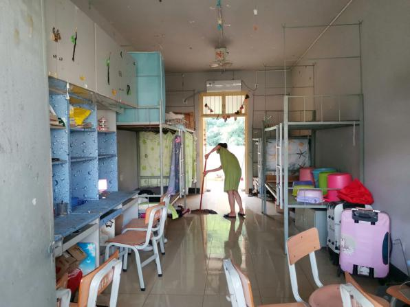

新闻网消息（文/贸易与旅游管理学院 韦小凤 李婵 图/贸易与旅游管理学院 李婵 李静宜）为加强学生宿舍的建设，提升学生党员的服务意识，在2019届学生毕业之际，在中国共产党建党建党98年前夕，在贸易与旅游管理学院学生第一党支部组织委员李婵老师、宣传委员李静宜老师的带领下，2019年6月21日下午，贸易与旅游管理学院学生第一党支部开展了“毕业生宿舍清扫”党日活动。
下午5时，师生们在达理楼一楼集中出发。李静宜带领男生党员打扫了坡下至善园8栋毕业生宿舍；李婵带领女生党员打扫了睿智园14栋毕业生宿舍。灰尘铺面而来，汗水浸湿衣裳，大家齐心协力把每间宿舍都打扫干净，一起从楼上搬运垃圾下楼。在打扫卫生的过程中，师生们发扬不怕脏不怕累、互帮互助的精神，共打扫了27间毕业生宿舍。当看到干净整洁的宿舍，大家都露出了开心的笑容。
本次活动的开展，体现了该院师生党员的服务意识，发扬了党员的先锋模范作用，同时也展现了新时代大学生党员的精神风貌。

合影留念